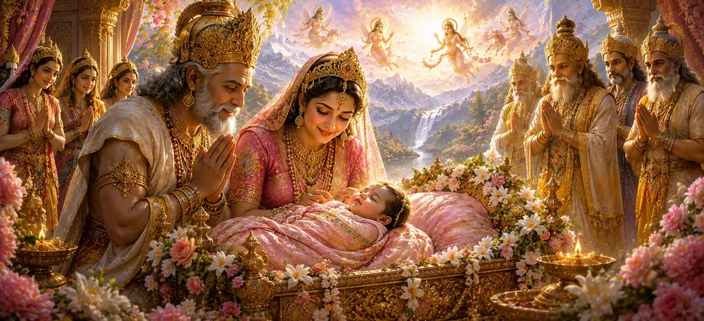

यह अध्याय राजा हिमालय और रानी मैना की बेटी देवी पार्वती के दिव्य जन्म का वर्णन करता है। उसके आगमन से तीनों लोक खुशी से भर गए, क्योंकि देवताओं को पता था कि वह कोई साधारण बच्ची नहीं बल्कि दिव्य शक्ति की पवित्र अभिव्यक्ति थी। उनके जन्म के माध्यम से, ब्रह्मांडीय योजना सामने आने लगी, जिससे भगवान शिव के साथ उनके भविष्य के मिलन का मार्ग तैयार हो गया।
पार्वती के जन्म से पहले, दुनिया भर में कई शुभ संकेत दिखाई दिए। आसमान साफ़ हो गया, पहाड़ों पर सुगंधित हवाएँ चलने लगीं और दिव्य प्राणी आनन्दित होने लगे। ये संकेत समस्त सृष्टि को लाभान्वित करने वाली एक महान दिव्य आत्मा के आगमन का संकेत देते थे।
जब दिव्य बालक का जन्म हुआ तो हिमालय और मैना खुशी से अभिभूत हो गये। उन्होंने अत्यधिक धन्य महसूस किया और ईश्वर के प्रति कृतज्ञता की प्रार्थना की। शाही परिवार ने जन्म को भक्ति, दान और उत्सव के साथ मनाया।
अपनी शैशवावस्था में भी, पार्वती में असाधारण सुंदरता, शांति और आध्यात्मिक प्रतिभा झलकती थी। ऋषियों और दिव्य प्राणियों ने माना कि वह दिव्य शक्ति का अवतार थी और उसका भविष्य ब्रह्मांडीय सद्भाव को बहाल करने में महत्वपूर्ण भूमिका निभाएगा।
देवताओं ने पार्वती का जन्म बड़े हर्षोल्लास के साथ मनाया। उन्होंने आशीर्वाद दिया और दिव्य माँ की स्तुति की, यह जानते हुए कि उनकी उपस्थिति अंततः शिव और शक्ति के पुनर्मिलन का कारण बनेगी और सभी दुनियाओं का कल्याण करेगी।
सृष्टि का मार्गदर्शन और उत्थान करने के लिए ईश्वर संसार में प्रकट होते हैं।
प्रत्येक दिव्य घटना एक उच्च उद्देश्य के अनुसार सामने आती है।
महान आत्माओं का जन्म संसार में आशीर्वाद लेकर आता है।
पार्वती के जन्म ने एक पवित्र मिशन की शुरुआत को चिह्नित किया जो देवताओं, संतों और मानवता को समान रूप से प्रभावित करेगा। उनका जीवन भक्ति, दृढ़ संकल्प और आध्यात्मिक महानता का एक उदाहरण बन जाएगा।
यह अध्याय हमें याद दिलाता है कि दैवीय आशीर्वाद अक्सर ऐसे तरीकों से आते हैं जो भविष्य को बदल देते हैं। पार्वती का जन्म सिखाता है कि दिव्य ज्ञान और अनुग्रह की उपस्थिति आध्यात्मिक पूर्णता की ओर मार्ग को रोशन कर सकती है।
ऋषियों और देवताओं ने नवजात पार्वती को आशीर्वाद दिया। उन्होंने उसकी भविष्य की महानता का पूर्वानुमान लगाया और प्रार्थना की कि उसका दिव्य मिशन सभी प्राणियों में शांति, धर्म और आध्यात्मिक जागृति लाएगा।
पार्वती के जन्म से तीनों लोकों में आशा फैल गई। देवताओं ने समझ लिया कि दैवीय नियति की लंबे समय से प्रतीक्षित पूर्ति शुरू हो गई है और भविष्य में सृष्टि के कल्याण के लिए शिव और शक्ति का पुनर्मिलन होगा।
"ईश्वरीय कृपा का जन्म दुनिया में रोशनी और हर दिल में आशा लाता है।"
मैना को दिया गया दिव्य वरदान अब देवी पार्वती के जन्म के माध्यम से अपना पवित्र फल देने लगा है। उनके आगमन के साथ आए असाधारण शुभ संकेतों का पता लगाने के लिए अगले अध्याय को जारी रखें और उनके दिव्य स्वभाव को दुनिया के सामने प्रकट किया।